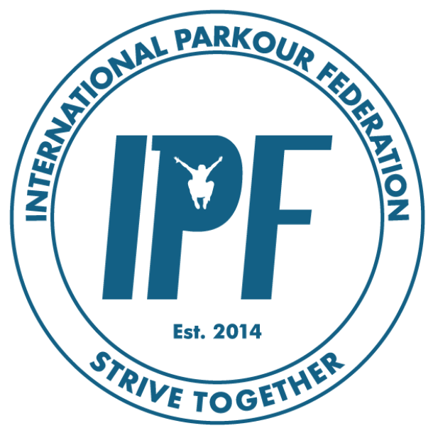
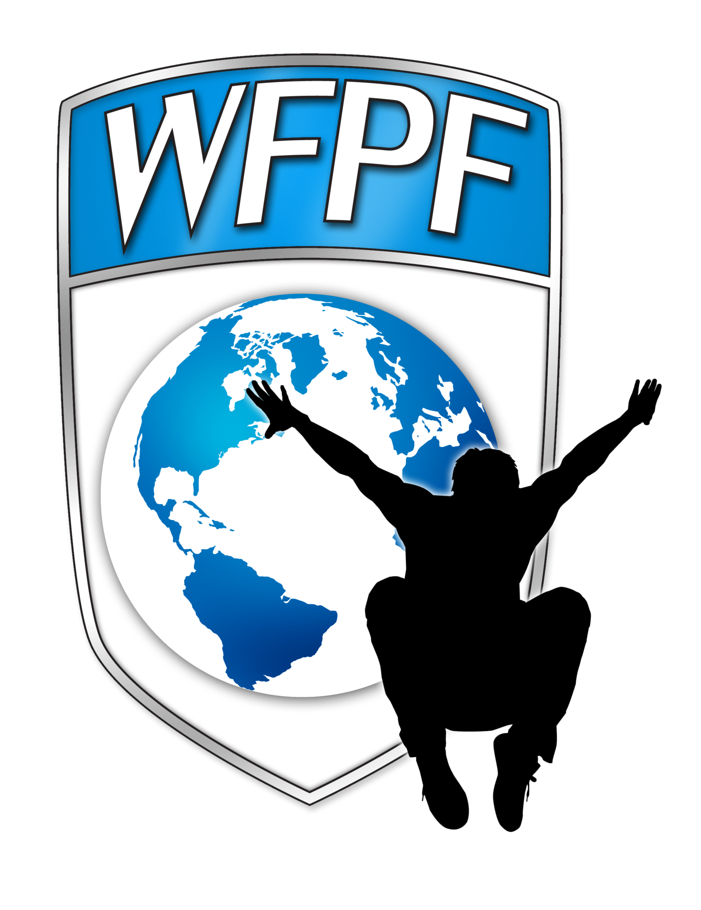
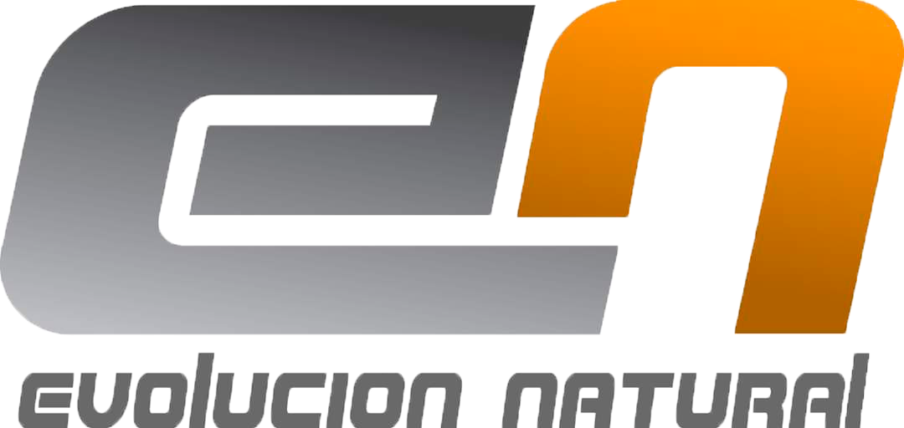
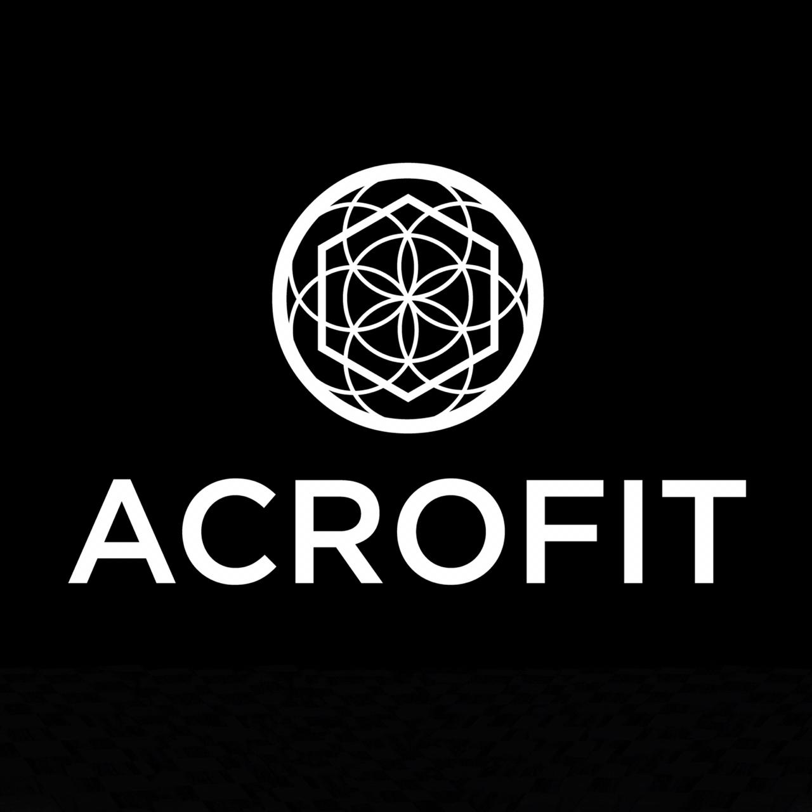
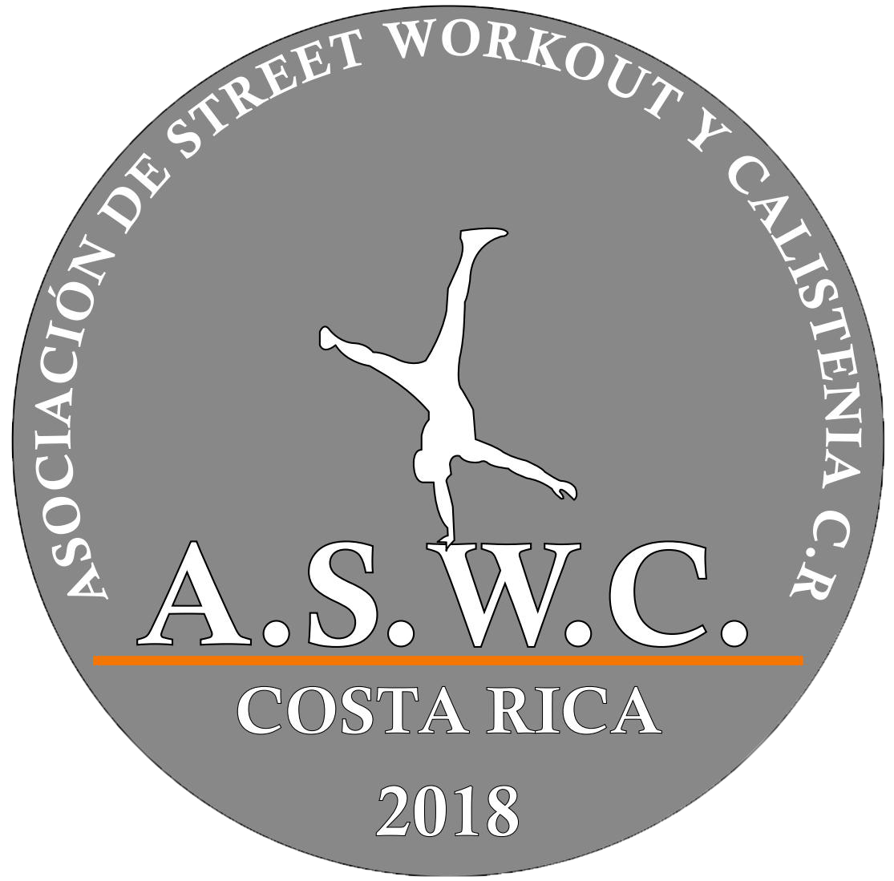
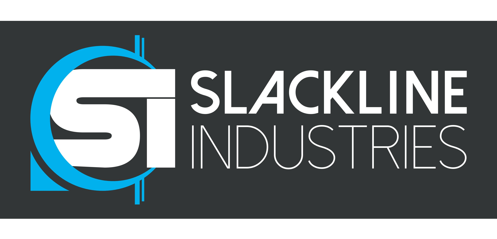

Organizaciones que nos apoyan
- 
- 
- 


- 
- 
- 
El Parkour (Palabra de origen francés, parcours que significa recorrido) es una
disciplina que surge en Lisses y Évry (a las afuera de París) alrededor de los años 80.
Sus fundadores, Williams Belle , Chau Belle, David Belle, Yann Hnautra, Sebastién Foucan, Laurent
Pimontesi, Malik Diouf, Guylain, N´Guba Boyeke y Charles Pierrer. Se inspiraron en el Método Natural para
crear lo que en un principio se nombró “Art Du Déplacement” (Arte Del Desplzamiento). Estos chicos,
formaron el grupo “Yamakasi” que significa “Cuerpo, mente y espíritu fuerte”